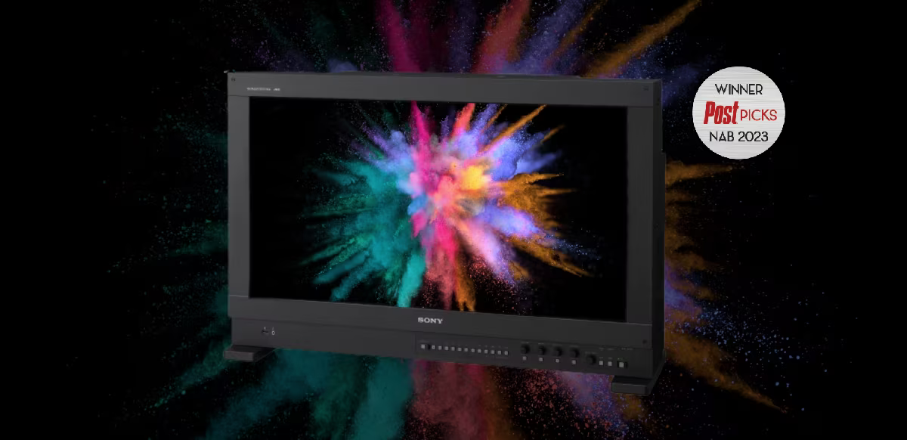
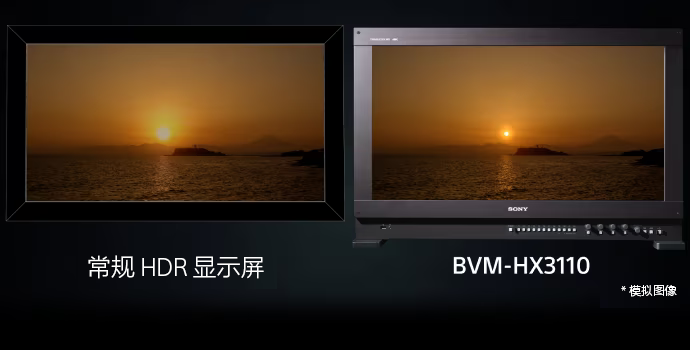
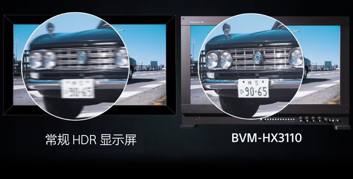
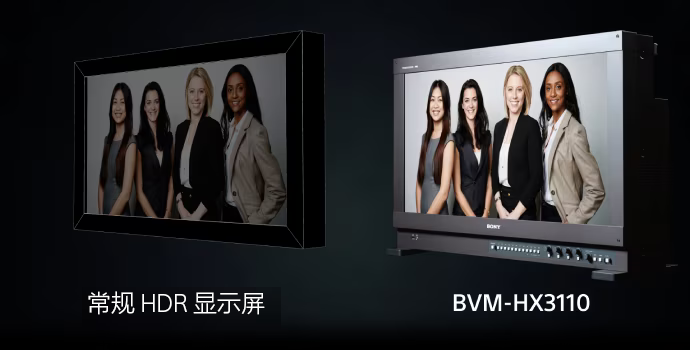
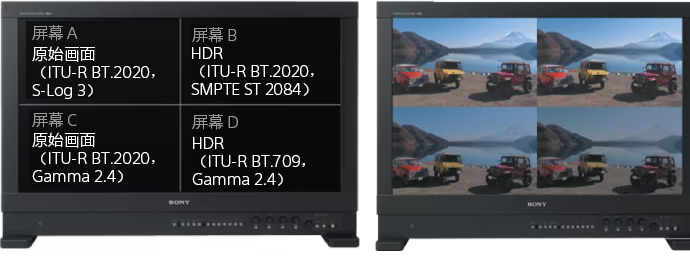

30.5 英寸 4K HDR 基准监视器TRIMASTER HX 技术 | 4000 nit 峰值亮度 | 双液晶面板

根据你的需求，选择最适合的入口
开箱检查、连接安装、首次开机、基础设置，图文步骤适合第一次使用。
输入源切换、色彩空间设置、HDR/SDR 模式、波形图等所有功能的详细说明。
用户手册 PDF、快速参考卡、固件、色彩配置文件等资源下载。
BVM-HX3110 为专业制作带来的关键优势

超高亮度精准还原 HDR 高光细节，满足最严苛的 HDR 内容制作需求。

高速响应消除运动模糊，确保快速运动画面的清晰度和准确性。

从不同角度观看依然保持色彩和亮度的一致性，团队协作更高效。

支持同时显示 4 路信号，多机位监看、对比调色一手掌控。
针对不同应用场景，提供一键式参数配置参考